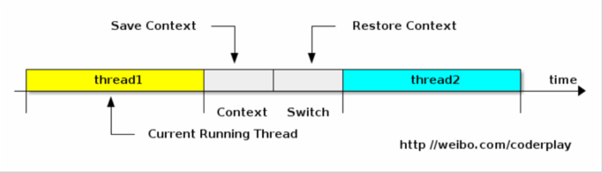

利用时间片轮转的方式，CPU给每个任务都服务一定的时间，然后把当前任务的状态保存下来，在加载下一个任务后，继续服务下一个任务，这个过程叫做上下文切换。
时间片轮转的方式使得多个任务在同一颗CPU上执行变成可能。

1、进程（有时也称为任务）是指一个程序运行的实例。在Linux系统中，线程就是能并行运行并且与它们父进程（创建它们的进程）共享同一地址空间（一段内存区域）和其他资源的轻量级的进程。
2、上下文：指某一时间点CPU寄存器和程序计数器的内容。
3、寄存器：是CPU内部的数量较少但是速度很快的内存（与之对应的是CPU外部相对较慢的RAM主内存）。寄存器通过对常用值（通常是运算的中间值）的快速访问来提高计算机程序运行的速度。
4.程序计数器：是一个专用的寄存器，用于表明指令序列中CPU正在执行的位置，存的值为正在执行的指令的位置或下一个将要被执行的指令的位置，具体依赖特定的系统。
5.PCB-“切换桢”：上下文切换可以认为是内核（操作系统的核心）在CPU上对于进程（包括线程）进行切换，上下文切换过程中的信息是保存在进程控制块中的。PCB还经常被称作“切换桢”。信息会一直保存到CPU的内存中，直到它们被再次使用。
6.上下文切换的活动
1）挂起一个进程，将这个进程在CPU中的状态（上下文）存储于内存中的某处。
2）在内存中检索下一个进城的上下文并将其在CPU的寄存器中恢复。
3）跳转到程序计数器所指向的位置（即跳转到进程被中断时的代码行），已恢复在程序中的该进程。
7.引起线程上下文切换的原因
1）当前执行任务的时间片用完之后，系统CPU正常调度下一个任务；
2）当前执行任务碰到IO阻塞，调度器将此任务挂起，继续下一任务；
3）多个任务抢占锁资源，当前任务没有抢到锁资源，被调度器挂起，继续下一个任务；
4）用户代码挂起当前任务，让出CPU时间；
5）硬件中断；